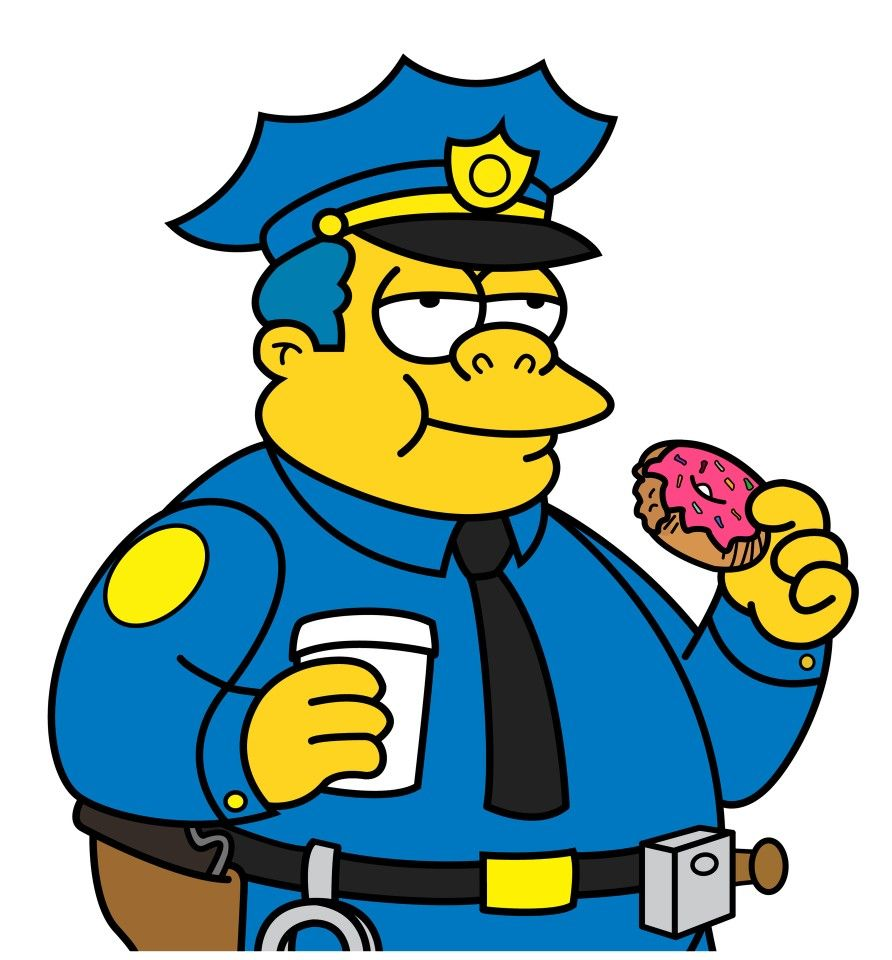

Sabor inolvidable
Una receta tan secreta que ni Krusty recuerda todos sus ingredientes.
Todo comenzó como una pequeña y humilde estrategia de evasión fiscal. Herschel Shmoikel Pinchas Yerucham Krustofski, conocido mundialmente como Krusty el Payaso, necesitaba un lugar para lavar... digo, invertir sus ganancias de la televisión.
Al darse cuenta de que la gente de Springfield comería literalmente cualquier cosa si venía envuelta en papel brillante con su cara, nació Krusty Burger. Desde entonces, hemos estado comprometidos con alimentar a esta ciudad con la carne más misteriosa y deliciosa que el dinero (o los favores políticos) pueda comprar.
No nos conformamos con calmar el hambre; queremos crear una dependencia física a nuestra salsa secreta.
Si no sabes qué parte del animal es, significa que es la parte más sabrosa. Esa es la garantía Krusty.
Mantenemos los precios bajos gracias a nuestra red de proveedores... digamos, "no convencionales" y libres de regulaciones.
Nuestra Costilla de Cerdo Krusty es tan buena que el gobierno intentó prohibirla. ¡Pero fallaron!
Fundador, CEO, y Figura Retórica
El visionario. Rara vez se le ve en un restaurante a menos que haya cámaras o un inspector de sanidad al que sobornar. Su risa registrada es sinónimo de comida rápida de dudosa procedencia.
Gerente Operativo (De turno)
La verdadera columna vertebral del imperio Krusty Burger. Su voz quebrada y su actitud apática aseguran que tu pedido siempre tenga ese toque especial de indiferencia adolescente.
Archivo Krusty Burger
Todo comenzó con Krusty el Payaso y una idea sencilla: poner su cara en una hamburguesa y esperar que Springfield hiciera el resto.
Desde entonces, servimos comida rápida, decisiones cuestionables y suficiente salsa para mantener el misterio.
 Fundador desde 1989
Fundador desde 1989
Manifiesto de la casa
No prometemos perfección. Prometemos que siempre habrá una mesa, una bandeja y una excusa para volver.
Una receta tan secreta que ni Krusty recuerda todos sus ingredientes.
Porque el hambre no debería depender del sueldo del señor Burns.
Cada pedido viene con una historia, una sorpresa o una sospecha razonable.
Personal autorizado
Un grupo de Springfield que trabaja duro para que tu hamburguesa llegue antes de que cambies de opinión.

Fundador y experto en sonreír para las cámaras.

Probador oficial de hamburguesas. Siempre disponible.
Inversionista. Prefiere que la salsa sea rentable.

Especialista en bebidas y pausas estratégicas.
Asistente de promociones y amigo de confianza.

Encargado de que nadie se robe las papas.

Control de calidad. Llega por una rosquilla y se queda por el combo.
 >>>>>>> 922c47c (Se aplica bootstrap para admin.)
>>>>>>> 922c47c (Se aplica bootstrap para admin.)